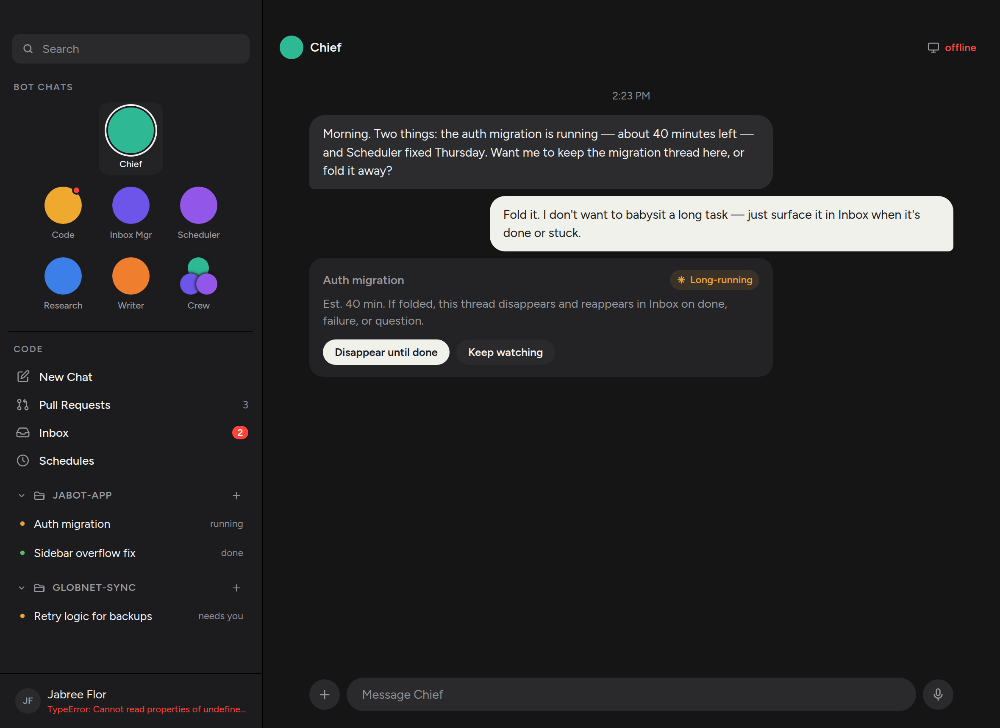
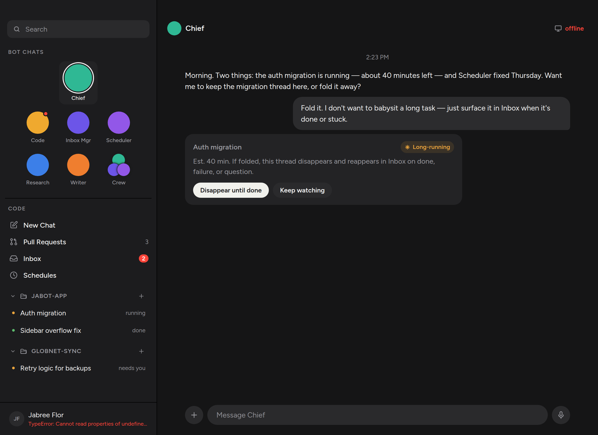

The agent no longer speaks from a balloon. Inbound text sits on the chat ground in light ink. Your own messages stay a graphite bubble on the right. Primary chrome — tabs, .btn.primary, pressed tool chips — stays cream.


.msg.bot .bubble drops the fill, radius, and 72% cap so the reply is just type on --chat. .msg.me .bubble keeps --bub-me graphite. A --cream token holds the old high-contrast fill for tabs and buttons, which used to borrow the own-bubble colour.
src/styles/chat.css — bot reply is unfilled; me is still a bubble.src/styles/tokens.css — --bub-me for own messages, --cream for chrome.src/styles/shell.css, cards.css, modal.css, schedules.css — primary chrome uses --cream.Run the unit tests and open Chief in a Vite preview. The inbound turn should have no fill behind it; your reply should still be a graphite bubble; Disappear until done should still be a cream button.